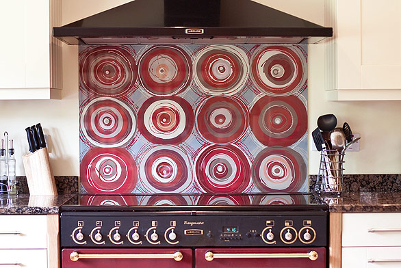

Funky Splashbacks
Welcome to Funky Splashbacks, where artist, Jo Omar creates bespoke handpainted glass splashbacks.
A beautiful glass splashback will create a special individual feature that will enhance your kitchen or bathroom. Each piece is unique and individually designed and created for you in her studio near Newbury in the United Kingdom.
- Each splashback is made to measure and designed to each individual customer's specific requirements
- Handpainted on to toughened glass and treated to produce a one-off piece of functional art for your kitchen, bathroom or wherever takes your fancy
- Add a unique stunning feature to your home with a splashback inspired by colour, pattern and texture
- A complete service offered from initial consultation through to final installation
Click here to visit the gallery to see some of the fantastic designs already created.
For more information or to book an appointment, call 01635 250701 or 07876 718705, alternatively email funkysplashbacks@gmail.com